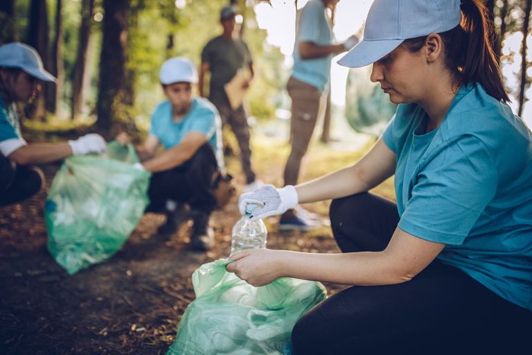
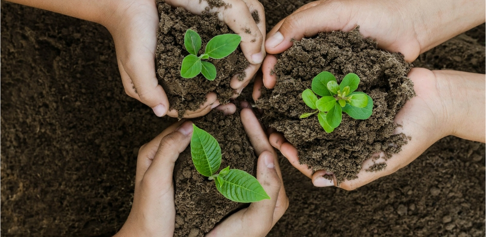
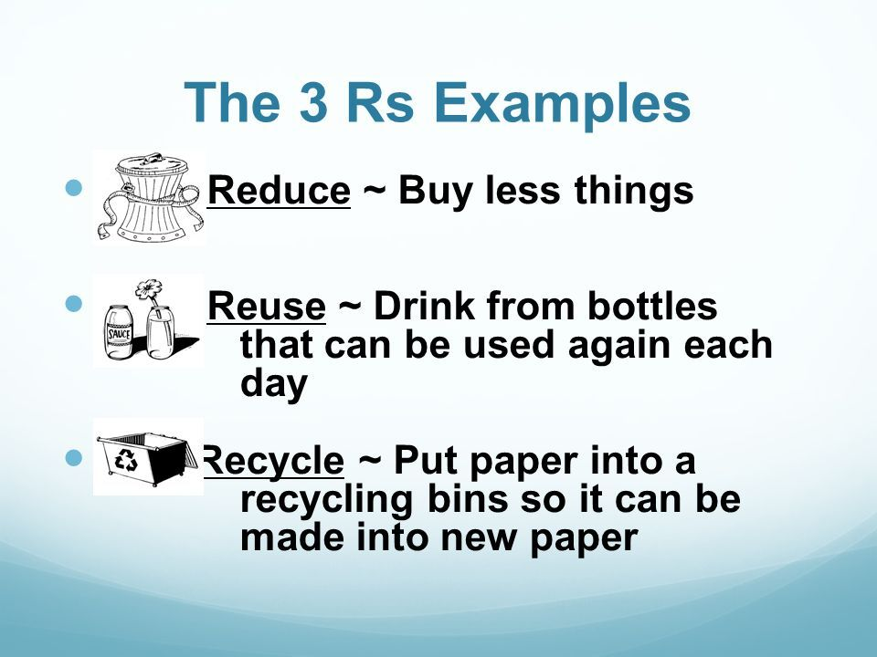

our recent posts


jan 3, 2021
Planting
One of the obvious reasons for planting trees is for the betterment of air quality. Also, their root system prevents the drainage of water to surface, thus lowering soil erosion. Plants are also important for the functioning to water cycle which is important for the planet to survive.

jan 8, 2021
Reduce-Reuse-Recycle
Reduce means to cut back on the amount of trash we generate. Reuse means to find new ways to use things that otherwise would have been thrown out. Recycle means to turn something old and useless (like plastic milk jugs) into something new and useful (like picnic benches, playground equipment and recycling bins)